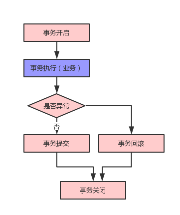

代理模式是JAVA常用的设计模式之一，代理模式不直调用代理对象，而是通过对象的代理类来处理，好比是中介、黄牛、经纪人，代理模式又分为静态代理和动态代理。
代理对象：面向调用者，在调用者和被代理对象之间作为隔离层加以控制，可以增强被代理对象的方法。
被代理对象：真正的执行者，需要对代理对象暴露
静态代理
何为静态？其实就是在编码阶段，写好代理类，然后编译运行，在程序运行前，代理类已经存在。
以学生小明找黄牛购票为例：
1 | public interface Student { |
小明：
1 | public class XiaoMing implements Student { |
黄牛：
1 | public class HuangNiu implements Student { |
测试类：
1 | public class StaticProxyTest { |
运行结果：
1 | 我是黄牛，你要什么票？ |
动态代理
相对于静态代理，动态代理的代理类是在运行时生成，动态代理在实现上又有两种，分别是jdk动态代理和cglib动态代理。
JDK动态代理
JDK动态代理要求被代理对象必须实现接口，其原理是代理对象实现该接口的方法，同时调用被代理对象的方法。将生成后的代理对象，强制转换为接口被调用者调用。还是以小明和黄牛为例：
小明，实现学生接口的buy方法
1 | public class XiaoMing implements Student { |
黄牛，作为小明的代理实现InvocationHandler
1 | public class HuangNiu implements InvocationHandler { |
测试类：
1 | public class ProxyTest { |
运行结果：
1 | 我是黄牛，你要什么票? |
HuangNiu类没有直接实现Person接口，而是通过反射生成字节码文件的方式，动态生成真正的代理类。
Cglib动态代理
与JDK动态代理不同的是，cglib代理不强制被代理类实现接口，它是通过生成代理类的子类，并重写代理类方法来实现的，所以代理类不能用final修饰，还是以小明和黄牛为例：
小明：
1 | public class XiaoMing { |
黄牛：
1 | //MethodInterceptor是cglib |
cglib动态代理并没有像JDK动态代理那样，直接持有代理类实例的引用，那么intercept方法的第一个参数Object是怎么生成？根据类加载的顺序，实例化子类前，必先实例化其父类
实例化 ChildClass ==> new FatherClass ==> new ChildClass；
测试类：
1 | public class CglibProxyTest { |
运行结果：
1 | 我是黄牛，你要什么票? |
应用场景
代理模式随处可见，最常见的是spring的AOP，比如spring的事务代理，在对数据进行操作时会涉及事务开启、事务提交、事务回滚等操作，简化的数据操作模型如下图：

业务场景中存在大量的事务操作（红色），而这些往往不是开发者的关注点，开发者更注重于业务逻辑（蓝色）。因此代理模式可以增强业务逻辑代码，在事务执行前开启事务，在事务执行后进行回滚/提交/关闭。
总结
- 静态代理需要编写代理类，动态代理不需要；
- 静态代理在无需修改被代理类的前提下，对代理类进行增强和扩展，但是静态代理只能对一个被代理类服务，如果被代理类过多，就会产生相应数量的代理类实现与被代理类一致的接口，产生冗余，不易维护；
- JDK动态代理只要求代理类实现InvocationHandler接口，被代理类实现业务接口即可。
- 静态代理编译时生成的class的性能高于JDK动态代理通过反射生成class；
- cglib不要求被代理类实现接口，而是通过继承的方式实现，因此类和方法都不能用final修饰。cglib底层用高性能的字节码生成器，性能高于反射。